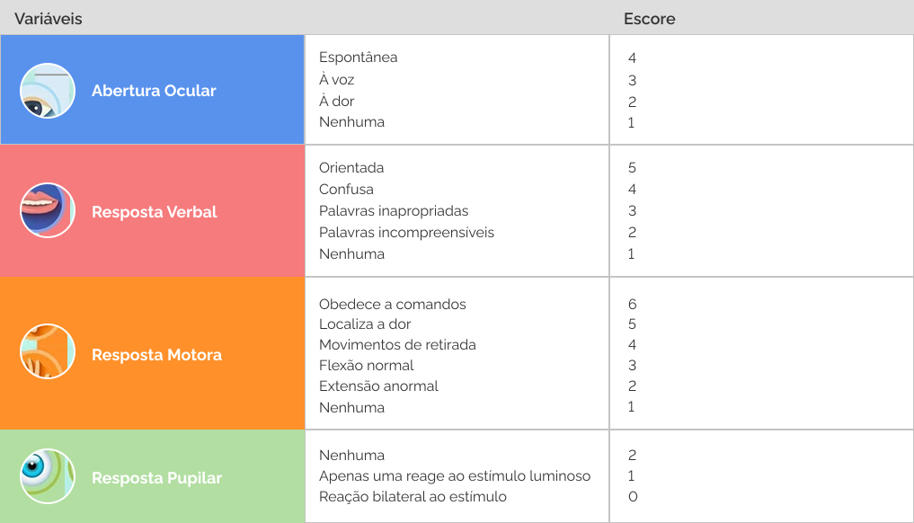

Através dessa escala é possível mensurar o nível de consciência dos pacientes e encaminhá-los de forma mais segura.
Esse site possui informações retiradas do site do ministério da saúde e foi criado sob supervisão da Dª. Rafaella Laguardia.
5 Passos para utilizar a Escala de Coma de Glasgow corretamente
1- Verifique: Identifique fatores que podem interferir na capacidade de resposta do paciente. É importante considerar na sua avaliação se ele possui alguma limitação anterior ou devido ao ocorrido que o impede de reagir adequadamente naquele tópico (Ex: paciente surdo não poderá reagir normalmente ao estímulo verbal).
2- Observe: Observe o paciente e fique atento a qualquer comportamento espontâneo dentro dos três componentes da escala.
3- Estimule: Caso o paciente não aja espontaneamente nos tópicos da escala, é preciso estimular uma resposta. Aborde o paciente na ordem abaixo:
Estímulo sonoro: Peça (em tom de voz normal ou em voz alta) para que o paciente realize a ação desejada.
Estímulo físico: Aplique pressão na extremidade dos dedos, trapézio ou incisura supraorbitária.
4- Pontue e some: Os estímulos que obtiveram a melhor resposta do paciente devem ser marcados em cada um dos três tópicos da escala. Se algum fator impede o paciente de realizar a tarefa, é marcado NT (Não testável). As respostas correspondem a uma pontuação que irá indicar, de forma simples e prática, a situação do paciente (Ex: O4, V2, M1 e P0 significando respectivamente a nota para ocular, verbal, motora e pupilar, com resultado geral igual a 7).
5- Analise a reatividade pupilar (atualização 2018): suspenda cuidadosamente as pálpebras do paciente e direcione um foco de luz para os seus olhos. Registre a nota correspondente à reação ao estímulo. Esse valor será subtraído da nota obtida anteriormente, gerando um resultando final mais preciso.
